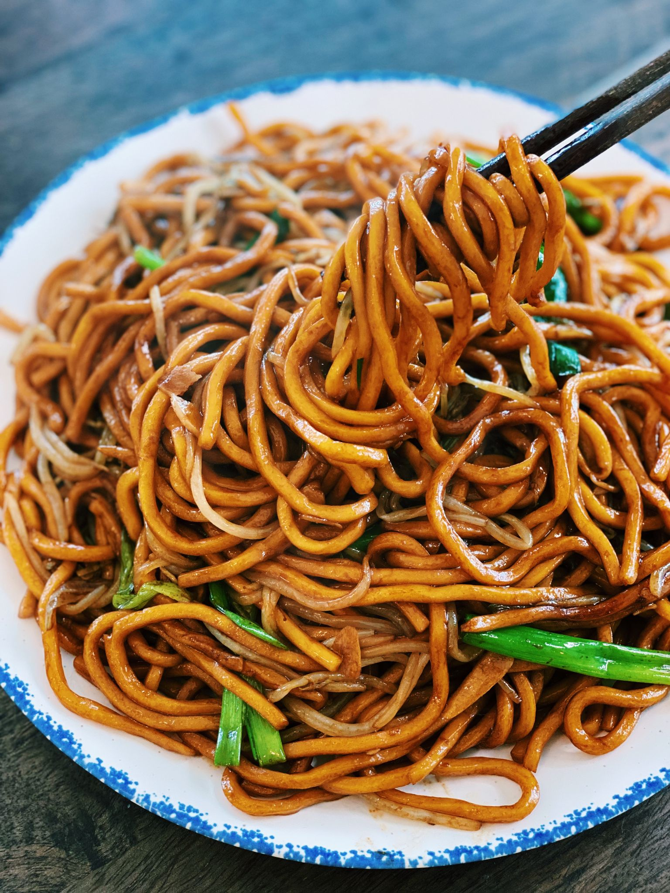

Fried Noodle

Description
Savory, spicy, and super
addicting Soy Sauce Pan-fried
Noodles take less than
15 minutes to make at home.
You can also add chicken, pork, or
beef to the noodles.
Ingredients
Vegetables
- Broccoli
- Bean Sprouts
- Peppers
- Baby Corn
Protein
- Tofu
- Chicken, or
- Beef, or
- Pork
Sauce
- Thai red Chili (2-3), chopped
- Soy Sauce
- Sugar
- Sesame Oil
- Water
Noodles
- Shanghai Noodles, or
- Frozen Udon, or
- Chow Mein Noodles
Ingredients Details
- 450g of Noodles
- 3 tbsp of Soy Sauce
- 2.5 tbsp of Dark Soy Sauce
- 2 tbsp of Sugar
- 2 tbsp of Sesame Oil
- 4 tbsp of Water or Vegetable Stock
- 6 cloves of Garlic (sliced)
- 3 stalks of Green Onion (cut into 2-inch pieces)
- 1-3 Red Chili (chopped)
- 1.5 cups of Bean Sprouts
Steps
- In a bowl, mix soy sauce,
dark soy sauce, sesame oil,
water, and sugar 'till
combined.
- Cook noodle as per instruction,
drain and set aside.
- In a pan, drizzle in oil and
turn the heat up to medium-high.
Once the pan is hot, add garlic,
the white part of green onion,
and chopped red chili. Saute
together for 2-3 minutes.
- Add in the noodles and pour
in the sauce; mix so all the
noodles are coated.
- Turn the heat to high, add
in bean sprouts, saute on
high heat for 2-3 minutes.
- Add in the rest of the green
onion, saute on high heat for
1-2 minutes.